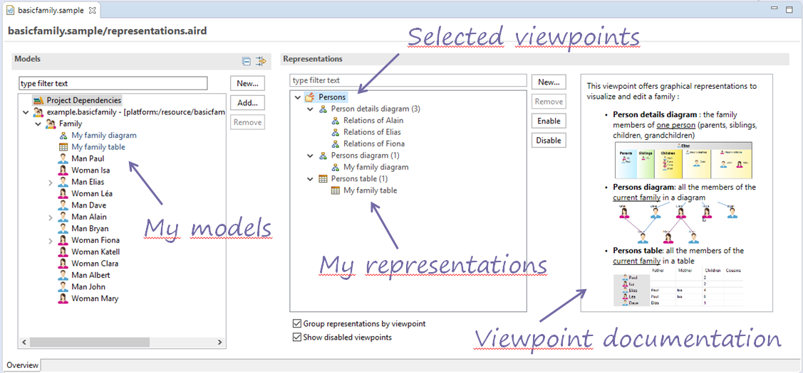
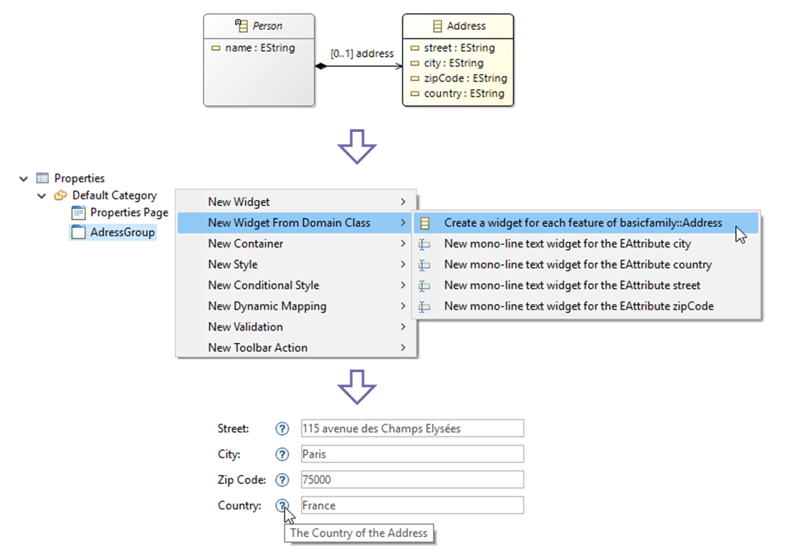
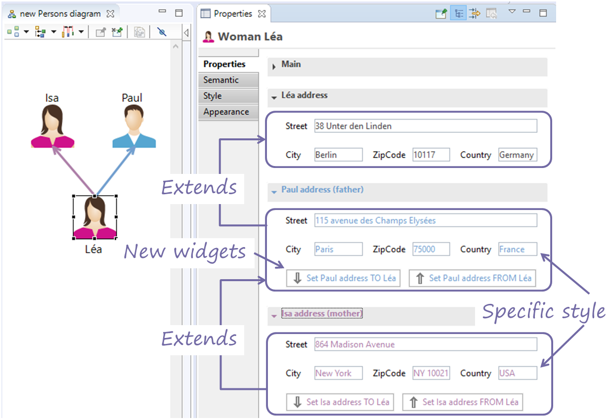
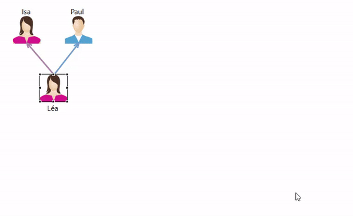
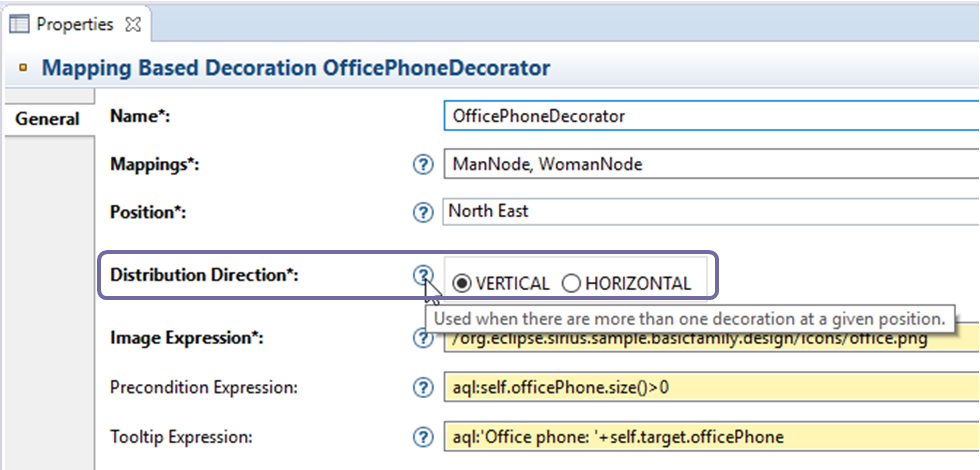
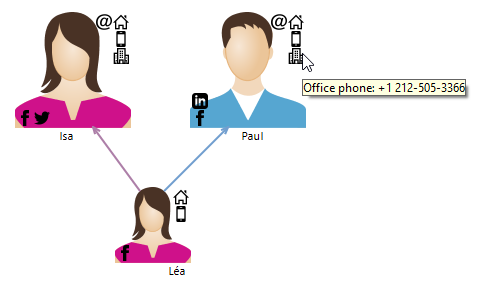
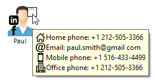
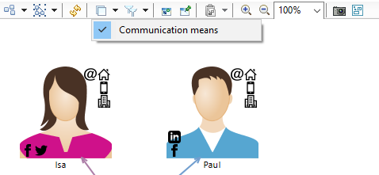

This new release, seeks to provide your end-users with a smoother experience as they work with the great modeling tools you created with Eclipse Sirius.
We decided to make life even easier for first-time Sirius-based modeling tool users.
It could be challenging for a beginner opening a Modeling Project for the first time to understand how to create a model, what viewpoints actually mean, and how to activate them in order to visualize and create specific representations.
With Sirius 5.0 all this information can be simply presented to the end-user commencing a Modeling Project. When the user has selected a specific preference, Sirius automatically opens up a new editor that presents all the models and representations organized by the various viewpoints.

This can greatly improve how users explore all current Modeling Projects, and the new editor can also facilitate how users can augment their Modeling Project.
Firstly a new wizard guides users through the model creation process so they no longer have to find the right wizard themselves to match their domain model.
Secondly, users no longer have to select a viewpoint in order to create the related representations. With the new UI, users just have to select the representation and Sirius automatically selects the appropriate viewpoint.
This new editor is experimental and as such it does not yet open by default. Your feedback on this feature is greatly welcomed.
Sirius 4.0 enabled the creation of customer properties views allowing you to provide rich edition capabilities to your diagrams.
Now Sirius 5.0 enables you to create your properties views much faster.
Once you have specified the right domain model for a properties group, Sirius 5.0 offers a new menu entry called New Widget From Domain Class. This allows you to create pre-configured widgets from each feature that has been defined in the corresponding domain class. End-users of your tool can use these widgets As-Is within the Properties View.
For instance, from the domain class Address, Sirius 5.0 enables you to populate a properties group containing a widget for each feature defined within the class Address, namely street, city, zipCode, city, country.

With this new feature you can save a great deal of time when building your custom properties views by simply adapting ready-to-use widgets created with just one click.
You can spend the time saved on implementing our enhancements for making your properties views even easier to use such as adding small buttons to the properties pages and groups toolbars as well as adding images to buttons and actions.
If you need to specify distinct properties views comprising similar widgets, Sirius 5.0 allows you to reuse them and extend them with ease to comprise specific views without duplicating their specifications.
For instance if you have created a group that displays somebody's address, you can reuse this group to display the address of this person's father.
Furthermore, this group can be specialized to display fields in a specific colour. And you also can extend it to add new widgets, so for example, you can add a button that copies the address from the person in question to the father and vice-versa.
This extended group can then be reused to display the address of the person's mother and with a specific colour too.

This is available at all levels (widgets, groups, pages) and can be used to override inherited specifications.
By simplifying your specifications, your tools maintainability is enhanced and you can better keep a consistent user experience with the same look and feel across your different properties views.
Some situations may require smart wizards to assist users effect efficient and contextual editing workflows at the right time.
With Sirius 5.0 you can use the properties views related mechanism to easily specify dialogs and wizards.
These dialogs and wizards are defined as operations that you can branch onto your tools (object creation, double-click, menus, etc.), and you can apply the new extension mechanisms as well as reuse some of your existing properties views when defining their contents.
For example, you can reuse the groups previously defined for the address and open a specific wizard when a user double-clicks a person.

Now you have the means to offer users a better model editing experience and perform pre-defined contextural and customized operations.
Sirius 5.0 gives you a new mechanism to better display decorations on diagrams.
Decorations are the small shapes and icons that can be displayed on nodes (on a corner, in the centre, or in the middle of a border) that provide additional information depending on the properties of the relevant model object.
Prior to Sirius 5.0 multiple decorations would overlap, whereas now you can decide if a new decoration should move vertically or horizontally from wherever a previously displayed decoration still displays.

So for example you can use this mechanism to display the different ways to communciate with someone, namely with email and phone numbers (home, mobile, work) on the top right and social networks (LinkedIn, Facebook, Twitter) on the bottom left.
For each person, only the relevant decoration should be used and Sirius 5.0 automatically computes the layout enabling users to see these decorations.

This new feature is particularly useful when several extensions add decorations to the same modeling tool. In this case Sirius ensures that the end-users continue to benefit from decorations displayed as before and if Sirius detects insufficient room for full display, then it provides a tooltip with all the decorations.

If you don't want these decoration to be made visible by default you can now place them on a transient layer.

With Sirius 5.0 a layer exclusively containing decorations or tools is considered as a transient layer, meaning that it is only applied if the user activates it and the Active by default option has not been selected. Even if the layer was activated the last time the user has closed the diagram, it will not be activated at the next opening.
Sirius 5.0 comprises some 100 changes (new features, enhancements, bug fixes) that the Sirius team has been working hard on for several months.
A comprehensive list of changes can be found in the Official Release Notes.
You can also watch the video of the Sirius 5.0 webinar All about UX by Mélanie Bats & Steacute;phane Beacute;gaudeau (Eclipse Foundation Oxygen MeetUp Series).
This version now requires Java 8 and is compatible with Neon and Oxygen (support for Eclipse Mars has been dropped). This version is also compatible with Guava 21.
Read What's new in Sirius 4.1 to see the new and noteworthy features of previous version.